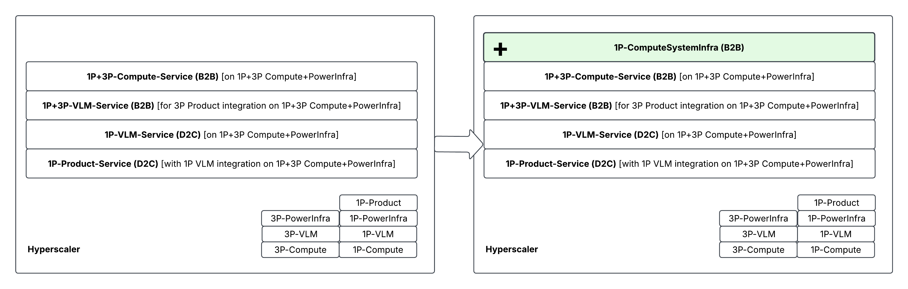
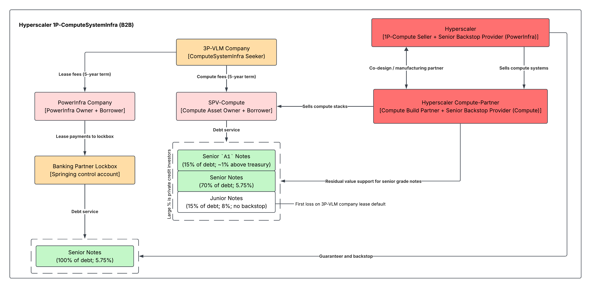
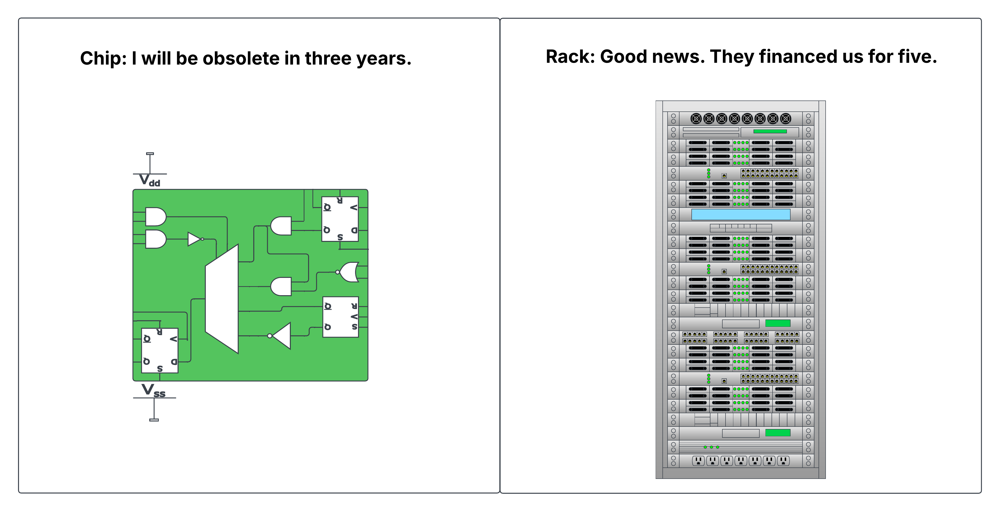

On the evening of 5 August, on a flight from Bangalore to Ahmedabad, I was reading the 25th July issue of the Economist talking about China in AI. A mere twenty-four hours before boarding I had been in a heated discussion about hyperscaler cash flows. Cut back to now, and there were some new ideas in my head. I quickly downloaded all public press I could find on recent compute deals to understand the landscape better. By the time we took off, I had started wondering whether we were looking at the wrong layer. Bear with the obfuscation ahead for my sake. I am describing the emerging pattern rather than naming every party in the recent large deals.
Let us build up some product vocabulary you would need to understand the figure below. First-party here means designed, financed or sold by the hyperscaler itself; third-party means supplied by an outside chip vendor or model lab. VLM is shorthand here for the model layer, whatever its modalities.
The old stack hyperscaler held something of the order of: some consumer applications, the hyperscaler's own served model, a platform serving outside models beside it, and raw compute rented by the hour. Each is metered, recognised across time, and runs on infrastructure the company owns. A few hyperscalers have created a new product category.
The hyperscaler now sells the complete first-party compute system. Racks of custom accelerators, networking and the software that makes them behave as one computer, to a buyer that is not itself or any of its internal teams. It books that sale gross, at something near thirty-five billion dollars a gigawatt [SemiAnalysis].

A conventional cloud sale keeps the assets and the financing together in one balance sheet. The hyperscaler spends the capital, owns the machines and collects usage revenue across five years of depreciation. But in the newer arrangement, a special-purpose vehicle borrows to buy the compute stack, an outside model company signs a five-year contract to use it, and the hyperscaler or its manufacturing partner supplies the equipment. The largest such structure priced at about thirty-five billion dollars across three tranches, with roughly 85 per cent of the debt in senior notes carrying residual-value support from the manufacturing partner, so that if the tenant stops paying and the chips resell for less than those holders are owed, the partner covers the shortfall [Bloomberg]. The junior tranche has no such support and absorbs the first loss. The chips are the collateral, though nobody can say what a proprietary accelerator fetches once several more generations have arrived.
The building and the power sit in a parallel structure. The model company leases the data centre from its owner, the payments enter a bank-controlled lockbox before they can be used anywhere else, and the cash accumulating there services a separate set of notes backstopped by the chip seller rather than by the manufacturer. Two leases support one workload and finance different assets, one the compute and the other the powered shell. Senior lenders on each side are protected by different guarantors, while the junior compute lenders keep the direct model-company risk. What looks operationally like a single data centre is financially several machines bolted together, each designed to place a particular failure on a particular balance sheet. The chip seller has now guaranteed as much as forty-four billion dollars of third-party lease payments this way, a sevenfold increase in nine months [The Information].

Two details help decide how much of this is really transferred. The residual-value support is not an open promise but a capped put against a floor agreed in advance, so the partner's exposure amortises towards zero as the notes pay down. And the shape of the seller's revenue changes. Where a cloud contract is earned across its life, a system sale is largely earned when the equipment is handed over, though whether it lands gross or net is a question of how much control passes to the vehicle and of whether the seller is acting as principal, which ASC 606 and IFRS 15 pose as a test rather than settle in advance. Multi-year usage revenue becomes something much closer to an upfront sale, while the acquisition debt and most of the residual risk sit elsewhere. The lockbox is a springing account, dormant until a trigger hands the lenders control of the rent.
For the seller this appears simultaneously as a system transaction and a credit arrangement. Revenue arrives when the equipment ships rather than gradually as rent, the outside vehicle carries the acquisition debt, and private capital funds capacity that would otherwise consume the hyperscaler's own cash. The guarantee is a spread, since a developer building with guaranteed paper borrows on materially better terms than one building without it. But! Moving the machine does not move every risk. The residual-value promise is still a promise, and it is the backstop provider who pays if it is called. The five-year contract puts one customer behind the whole thing, which is slightly scary. And selling a machine once earns less, and arrives less evenly, than renting it out for years. Calling the system infrastructure changes how it is financed, but it will not change how fast it goes out of date.

Now bring in open weights! If a downloadable model approaches the best closed one, the value of owning the VLM falls while the value of running it does not. The Android analogy is useful here. An open operating system compressed the rent available from licensing software and expanded the market for devices, silicon, distribution and services around it. An open model can do the same here, shortening every lab's lead, reducing switching costs and turning model quality into a feature. What survives the weights becoming free is the rest of the machine. Scale-up fabric, HBM capacity and bandwidth, power delivery, liquid cooling and the runtime that presents a rack as one coherent computer all set tokens per dollar and tokens per watt, and an open model that cannot use the memory hierarchy or the interconnect efficiently simply costs more to serve. That is where the pricing power sits once model rents compress. The platform is then paid whether the customer picks its first-party VLM, an outside VLM through the managed service, or public weights running directly on rented accelerators. With system sales it is paid even when another financier owns the accelerators.
Put rough numbers against that. The first-party model business is running at something like twelve billion dollars a year today, while third-party compute and platform revenue is projected above seventy-three billion for 2027 and system sales somewhere near a hundred and twenty [SemiAnalysis]. Those are not the same kind of money and should not be added together as though they were. Model and platform revenue recurs and is earned across the life of a contract, and the platform line carries the capital intensity of owning the machines it runs on. System sales are transactional, land in a lump, are thinner in margin, and stop the moment the orders do. A hundred and twenty billion of hardware shipped is not a hundred and twenty billion of cloud subscription, and anybody modelling this should discount it heavily for both margin and its one-off character. The proportions survive that discount, which is the point. Even after marking the system line down hard, the money attaching to the model itself is the smallest of the three.
A first-party model earning twelve billion a year and a third-party model earning the same are worth about the same to the company underneath both of them (workload-wise), which is paid in either case. For an investor who firmly believes in that commoditised future, this is close to the ideal exposure, though only under four conditions.
- The custom system must deliver a real cost advantage once memory, networking and software are counted.
- Open models must run on it without customers feeling trapped.
- Falling prices per token must produce more than proportionally greater use.
- And the backstops must survive the day a newer machine makes the collateral look old.
Miss the first two and portability commoditises the cloud as well as the model. Miss the third and the platform owns an efficiently built glut. Miss the fourth and what looked like asset-light revenue returns through the side door as a credit loss.
Two things would break this faster than any of those conditions. If residual values fall before the notes amortise, the capped put is called while the guarantor still carries most of its exposure. And if auditors or regulators decide the guarantees and the vehicle belong on the sponsor's balance sheet, the structure loses the one property that made it worth building.
My own view is that this structure favours the hyperscaler holding all five routes to market: product, model, platform, compute service and compute system. It does not need to win every model release if each competing model becomes a possible customer for its silicon and its software. That is not an argument that the model stops mattering, since the best model still attracts users, sets workloads and protects distribution. The tell I am waiting for is the first quarter in which an open model gains share, the first-party model loses it, and the same hyperscaler's compute revenue accelerates anyway. In that world, the model leaderboard would record a loss while the cash-flow statement recorded a win.